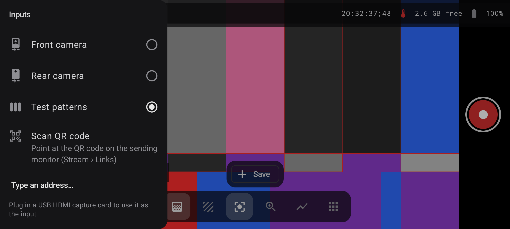

SETUP / COMPATIBILITY
Bring HDMI in. Put the phone to work.
FieldScope Pro uses compatible UVC USB capture hardware as the input path for an external camera. No capture card? The built-in phone camera, test patterns, local clips and supported network inputs still work.

Three steps
Connect the camera feed.
Start with an Android device with USB host support and a UVC-compatible capture card. Capture cards and cables are third-party hardware.
- Connect HDMIRoute the camera's HDMI output to a compatible UVC USB capture device.
- Connect USBAttach the capture device to the Android phone or tablet using USB host/OTG as needed.
- Grant accessApprove the USB-device prompt and select the input when the app opens.
- Check the signalReview resolution, frame rate, pixel format and bandwidth in the signal information.
UVC capture compatibility
Match the card to the USB link.
Transfer mode and input format affect the resolution and frame rate the phone can sustain. The app reports signal details and can explain unsupported hardware.
| Connection type | Briefed example | Compatibility note |
|---|---|---|
| USB 2 capture | MJPEG | Up to about 1080p30, depending on the capture device and link. |
| USB 3 capture | Uncompressed YUY2 or NV12 | 1080p60 on compatible hardware and a capable USB 3 link. |
| USB 3 capture | MJPEG | 4K30 on compatible hardware; decoding load and device performance vary. |
| 10-bit capture | P010 | Depends on capture device, USB bandwidth, Android device and end-to-end format support. |
Feature & device support
The app should tell you what the phone can do.
- Camera controls vary by lensAvailable sensor, focus, RAW and encoder capabilities differ across phone models and even between lenses on one phone.
- Controls are capability-awareUnsupported options are hidden or explained rather than silently shown as if every camera can use them.
- OpenGL ES 3.1Required for the FieldScope Pro rendering and scope pipeline.
- Power and thermals matterThermal and battery conditions can trigger automatic power-saving behavior. Recording needs the app in the foreground.
Use the camera you have
No capture dongle? There are other inputs.
Select a built-in camera, a test pattern, a saved clip or a supported network stream. Use the same compatible scopes and monitoring tools across supported inputs.